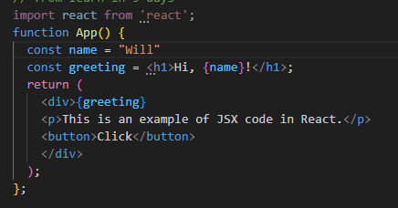

I've been learning to code for about nine months now, with multiple learning approaches so far. Do I need to 'introduce myself'? Maybe for later. And no, I'm not going to 'say something interesting about myself.
Starting with React, trying to get into a book from Humble Bundle, 'Master React in 5 Days' by Eric Sarrion. I was initially nervous about a timeframe being put on the cover like this, but I'm ignoring that element and following the book as I can.
I'm fairly familiar and confident with vanilla javascript and interacting with HTML, and the first chapter has really opened my eyes to what React can do. The first bit of code that is shown wouldn't be enough to call a mini-project, but it's got the beginning concepts whirring in my head.

What's struck me at this point is how the React code is that the above wasn't a mixture of HTML and JS, but it was the React script imprinting everything onto the page through the script. Yes, it's possible with vanilla JS to get html elements onto a page, but not half as cleanly as with React:
I'm still a mixture of fascinated / intrigued / baffled that the html for the page just has a single empty 'div' and that everything else is imprinted through React, but I'm already sold on the utility and possibility for React. Thinking more about it, it's only a bit of a step (leap?) from 'document.createElement…'style uses of JS to inject HTML into a page.
The above code uses JSX (JavaScript / XML which is a wonderfully ridiculous acronym in an acronym - I had to look up XML to find that it was 'Extensible Mark-up Language' which, if anything , makes it even less clear!). Defining the structure if the UI with JSX and combining more familiar javascript variables.
As I'm only 12% into the book, I'm not surprised I'm confused, but one thing that I will clearly need to get my head around is the layers of imports and exports - 'index.js' creates 'root' from the empty html div above, and renders 'App'. In the next exercise we're doing, App.js imports 'Counter' and exports 'Counter'. 'Counter.js' then returns an html tag with text in. Hopefully all will come clear in the end!
My first thought about the different layers and the multiple steps between index > App > Counter will be to allow different layers / different components so that there can be multiple apps in on the same page, each with multiple components to them. Likely easier to set the foundation at the outset. (Yes, it looks like now I'm using this as a running conversation with myself. Nothing to see here, move along.)
In counter, if left as originally coded, only the console will act as a counter and the browser will remain at 'The counter is set to: 0' as 'count' is not set as a reactive variable. To define a 'reactive variable', use the 'useState()' method.
useState(initValue), where initValue is the value you want the variable to start at, returns two variables. It's accepted good practice to call the second variable 'set' followed by the name of the reactive variable.